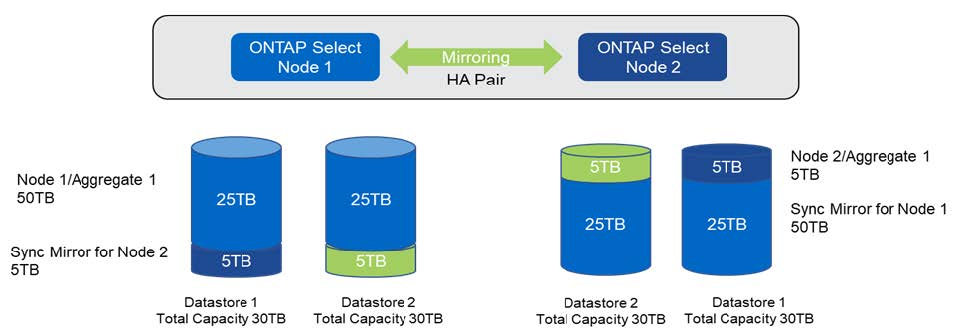

版本資訊
版本資訊
增加儲存容量
 建議變更
建議變更
使用「部署」可為叢集中的每個節點新增及授權額外的儲存空間。ONTAP ONTAP Select
在支援的情況下、只有使用支援的儲存新增功能ONTAP 才能增加管理中的儲存容量、而且ONTAP Select 不支援直接修改此功能。下圖顯示啟動儲存新增精靈的「+」圖示。

下列考量對於容量擴充作業的成功非常重要。新增容量需要現有授權來涵蓋總空間量（現有加上新的）。導致節點超過授權容量的儲存新增作業會失敗。應先安裝具有足夠容量的新授權。
如果額外的容量已新增至現有ONTAP Select 的VMware Aggregate、則新的儲存資源池（資料存放區）應有類似於現有儲存資源池（資料存放區）的效能設定檔。請注意、無法將非SSD儲存設備新增至ONTAP Select 安裝有AFF特性（啟用Flash）的支援節點。也不支援混合DAS與外部儲存設備。
如果將本機附加儲存設備新增至系統以提供額外的本機（DAS）儲存池、則您必須建置額外的RAID群組和LUN（或LUN）。就像FAS 使用VMware系統一樣、如果您要在同一個集合體中新增空間、請務必確保新的RAID群組效能與原始RAID群組的效能相似。如果您要建立新的Aggregate、如果新的RAID群組配置對新Aggregate的效能影響已充分瞭解、則新的RAID群組配置可能會有所不同。
如果資料存放區的總大小未超過ESX支援的最大資料存放區大小、則可將新空間新增至該資料存放區、做為範圍。將資料存放區範圍新增至ONTAP Select 已安裝了資源庫的資料存放區、可以動態執行、不會影響ONTAP Select 到該節點的作業。
如果ONTAP Select 此節點是HA配對的一部分、則應考慮一些其他問題。
在HA配對中、每個節點都包含來自其合作夥伴的資料鏡射複本。若要將空間新增至節點1、必須將相同的空間新增至其合作夥伴節點2、才能將節點1的所有資料複寫至節點2。換句話說、在節點2上、新增至節點2的空間是節點1容量新增作業的一部分、因此無法在節點2上看到或存取。此空間會新增至節點2、以便在HA事件期間完全保護節點1資料。
效能還有其他考量。節點1上的資料會同步複寫至節點2。因此、節點1上新空間（資料存放區）的效能必須符合節點2上新空間（資料存放區）的效能。換句話說、在兩個節點上新增空間、但使用不同的磁碟機技術或不同的RAID群組大小、可能會導致效能問題。這是因為使用RAID SyncMirror 功能來維護合作夥伴節點上的資料複本。
若要增加HA配對中兩個節點的使用者存取容量、必須執行兩項儲存新增作業、每個節點各執行一項。每項儲存新增作業都需要在兩個節點上增加空間。每個節點所需的總空間等於節點1所需的空間、加上節點2所需的空間。
初始設定包含兩個節點、每個節點都有兩個資料存放區、每個資料存放區有30TB的空間。藉由使用者可在資料存放區1中使用10TB的空間、藉由使用者可利用此功能來建立雙節點叢集。ONTAP利用每個節點5TB的使用中空間、即可設定各個節點的部署。ONTAP
下圖顯示節點1單一儲存新增作業的結果。在每個節點上、仍然使用相同的儲存容量（15TB）ONTAP Select 。不過、節點1的主動式儲存設備（10TB）比節點2（5TB）多。當每個節點託管另一個節點的資料複本時、這兩個節點都受到完整保護。資料存放區1中還有額外的可用空間、而且資料存放區2仍完全可用。
容量分配：單一儲存新增作業後的配置與可用空間

節點1上的兩項額外儲存新增作業會消耗資料存放區1的其餘部分和資料存放區2的一部分（使用容量上限）。第一項儲存新增作業會佔用資料存放區1中的15TB可用空間。下圖顯示第二次儲存新增作業的結果。此時、節點1管理的作用中資料量為50TB、節點2則為原始5TB。
*容量發佈：在節點1*執行兩次額外的儲存新增作業之後、再進行配置與可用空間

容量新增作業期間使用的VMDK大小上限為16TB。叢集建立作業期間所使用的VMDK大小上限仍為8TB。根據您的組態（單節點或多節點叢集）和新增的容量量、使用VMware部署可建立大小正確的VMDK。ONTAP不過、在叢集建立作業期間、每個VMDK的最大大小不得超過8TB、在儲存新增作業期間、大小不得超過16TB。
利用軟體 RAID 增加 ONTAP Select 的容量
儲存新增精靈也可以使用ONTAP Select 軟體RAID來增加支援支援支援的支援能力。此精靈僅顯示可用的DAS SDD磁碟機、並可將其對應為RDM至ONTAP Select 該VM。
雖然容量授權可以增加單一TB、但在使用軟體RAID時、無法實際增加單一TB的容量。與將磁碟新增至FAS 某個實體或AFF 非實體陣列類似、某些因素決定了單一作業中可新增的最低儲存容量。
請注意、在HA配對中、若要將儲存設備新增至節點1、則節點的HA配對（節點2）上也需要相同數量的磁碟機。本機磁碟機和遠端磁碟都是由節點1上的單一儲存新增作業所使用。也就是說、遠端磁碟機可用來確保節點1上的新儲存設備在節點2上進行複寫和保護。為了在節點2上新增本機可用的儲存設備、兩個節點上必須分別執行儲存新增作業和相同數量的磁碟機。
此功能可將任何新磁碟分割成與現有磁碟機相同的根磁碟、資料和資料分割區。ONTAP Select分割作業會在建立新的Aggregate期間或在現有Aggregate上擴充期間執行。每個磁碟上的根分割區等量磁碟區大小會設定為符合現有磁碟上現有的根分割區大小。因此、兩個等量資料分割區大小中的每一個都可以計算為磁碟總容量減去根分割區大小除以兩個。根分割區等量磁碟區大小是可變的、在初始叢集設定期間會依照下列方式進行計算。所需的根空間總計（單節點叢集為68GB、HA配對為136GB）會分成初始磁碟數、減去任何備用磁碟和同位元磁碟。根分割區等量磁碟區大小會維持不變、以固定於要新增至系統的所有磁碟機上。
如果您要建立新的Aggregate、所需的磁碟機數量下限會因RAID類型和ONTAP Select 該節點是否屬於HA配對的一部分而有所不同。
如果要將儲存設備新增至現有的Aggregate、則必須考量其他事項。假設RAID群組尚未達到最大限制、您可以將磁碟機新增至現有的RAID群組。在FAS 現有RAID群組中新增磁碟的傳統功能僅供使用、AFF 因此在新磁碟上建立熱點是可能的考量。此外、只能將資料分割區大小等於或大於相同的磁碟機新增至現有的RAID群組。如上所述、資料分割區大小與磁碟機原始大小不同。如果要新增的資料分割區大於現有的分割區、則新磁碟機的大小是適當的。換句話說、每個新磁碟機的一部分容量仍未使用。
也可以使用新磁碟機建立新的RAID群組、作為現有Aggregate的一部分。在此情況下、RAID群組大小應與現有的RAID群組大小相符。